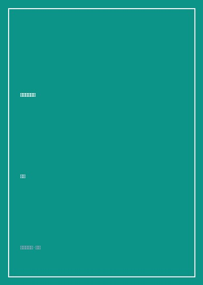

《靠自己去成功》

总体观点
现代女性最核心的资本不是容貌或依附他人，而是精神与财务的彻底独立：刘墉打破传统社会对女童的娇纵与软弱规训，鼓励女儿从小树立独立担当意识，做自己生命的一国之君。
真正的优雅源于由内而外的自我尊重与情绪定力：在面对校园容貌焦虑、被排挤冷落时，不随波逐流迎合群体盲从，在阅读与艺术滋养中构筑强大的心理免疫系统。
安全意识是走好人生长路的第一道铠甲：刘墉以父亲特有的审慎与敏锐，巨细靡遗传授女孩在真实险恶社会中的防狼防骗实操、社交饮酒防范与识别渣男心理，用智慧为纯真护航。
核心观点
-
1. 拒绝做菟丝花：把人生方向盘握在自己手里
社会常给女孩灌输‘找个好归宿就万事大吉’的麻药，但靠山山倒靠人人跑；唯有自己拥有一技之长与谋生能力，任何时候都有优雅离开的底气。
刘墉教育女儿：‘你可以享受男士为你绅士推门的照顾，但你心里必须清楚，推开门后走上职场台阶的路必须靠你自己的双脚！’ -
2. 破除容貌焦虑：独特的谈吐与骨气胜过千篇一律的皮囊
青春期女孩极易陷入对身材和颜值的过度苛求；把关注点转移到知识储备、演讲表达与健康体魄上，内心的充盈自然会化为举手投足的迷人光彩。
当女儿因脸上长青春痘而拒绝去学校上课时，刘墉带女儿去参观画廊，借名画中神态各异的女性肖像讲解个性美学的永恒魅力。 -
3. 社交安全第一戒律：永远不要给居心不良者留模糊空间
在公共场合或聚会派对中，对越界的举动必须第一时间冷面坚决拒绝；含糊的客气往往被登徒子解读为默许诱惑。
详细叮嘱女儿在大学聚会时离开过视线的饮料绝对不喝，深夜乘车必须记下车牌并与家人保持实时通话定位。 -
4. 理财与消费观启蒙：做金钱的主人而非物欲的奴隶
从小建立零花钱预算与储蓄习惯；明白奢侈品标签买不来真正的尊贵，掌控欲望、理性消费才能拥有支配财富的自由。
鼓励女儿通过打工洗碗体验每一分钱的来之不易，引导其用自己赚来的薪水购买第一把专业小提琴，体会自食其力的自豪。 -
5. 情窦初开时的自重：懂得在爱中守护不可侵犯的底线
面对异性的追求保持清醒判断，不被甜言蜜语轻易冲昏头脑；真正的爱情是彼此成就共同进步，而非单方面的控制与消耗。
刘墉写信告诉女儿：‘如果一个男孩因为你拒绝深夜单独外出就对你冷嘲热讽，请立刻踢开他，他爱的是他自己的欲望而非你的尊严。’
全书结构
-
第一辑：做个快乐的读书人（学习策略与心智开启）
针对中学课业繁重的女儿；传授如何利用番茄钟提高做功课专注度、如何克服厌学心理以及怎样在应试竞争中保持对知识的热爱。
分享‘彩色卡片记忆法’：将枯燥的历史年代与生物术语制成随身小卡片随时抽背，化整为零攻克学业难关。 -
第二辑：做个健康聪慧的现代少女（身体自信与情绪管理）
聚焦青春期少女的生理与心理剧变；探讨如何接纳不完美身材、如何排解青春期抑郁低落情绪，以及运动锻炼对心性的塑造。
父女长谈关于‘被同伴孤立’时的自我疏导法，教导女儿明白高质量的独处远比低声下气讨好小圈子更有力量。 -
第三辑：在江湖上保护好自己（防身智慧与人际防御）
全书最具实操价值的安全防护指南；剖析都市险恶环境中女孩可能遭遇的搭讪套路、借贷圈套与隐私泄露风险。
详细拆解如何识别假闺蜜的挑拨离间，传授在面对他人刺耳八卦时‘微笑着不接话’的最高冷防守姿态。 -
第四辑：金钱与责任的试金石（消费自律与生活自理）
涵盖做家务、学做饭、记账储蓄与独立租房；勉励女儿不要成为娇生惯养的温室花朵，掌握扎实的生活基本功。
指导女儿如何在大学宿舍与不同生活习惯的舍友制定公共卫生公约，用制度化沟通替代无休止的情绪冷战。 -
第五辑：展翅飞向广阔天地（大将风度与女性成功学）
总结全书期许；刘墉寄语女儿成长为一个有大胸怀、大格局的现代新女性，在未来的学术与职业生涯中绽放属于自己的光芒。
全书结尾金句：女儿，你要记住，世界很大，天空很广；你不需要借任何人的翅膀，因为你自己就是那只能翱翔长空的雄鹰！